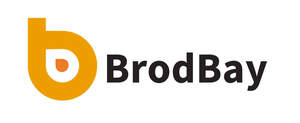

Trade Mark Journal No.2025/027 4 July 2025
UK00004223673 24 June 2025 (16,18)

- Class 16
- Plastic bin liners; Bin liners of plastics; Bin liners of paper; Dustbin liner bags of plastic; Perfumed drawer liners; Trash can liners; Scented paper drawer liners; Cat box liners in the form of plastic bags; Drawer liners of paper, perfumed or not; Drawer liners made of scented paper; Bags of plastics for lining refuse bins; Liners of plastic for toilet trays for domestic animals; Liners of plastic for toilet boxes for domestic animals; Paper toilet bowl liners; Liners of paper for toilet trays for domestic animals; Liners of paper for toilet boxes for domestic animals; Garbage bags of plastic; Dustbin bags; Garbage bags of paper or of plastics; Bags (Garbage -) of paper or of plastics; Rubbish bags; Garbage bags of plastics [for household use]; Plastic bags for undergarment disposal; Plastic bags for packaging ice; Garbage bags of paper [for household use]; Plastic bags for pet waste disposal; Garbage bags of vinyl for household use; Bags [envelopes, pouches] of paper or plastics, for packaging; Cardboard containers; Plastic disposable diaper bags; Plastic bags for disposable diapers; Carrier bags of paper or plastic; Rubbish bags (made of paper or plastic materials); Plastic bags for packaging; Paper containers; Plastic bags for disposing of pet waste; Plastic sandwich bags; Refuse bags of paper; Plastic bags for packing; Shopping bags of paper or plastic; Plastic shopping bags; Paper bags; Bags of paper; Paper bags and sacks; Paper for bags and sacks; Sandwich bags; Freezer bags; Food waste bags of biodegradable plastic for household use; Sandwich bags [paper]; Plastic bags for wrapping; Food waste bags of paper for household use; Paper lunch bags; Paper shopping bags; Food bag tape for freezer use; Padded bags of paper; Paper bags for packaging; Packaging bags of paper; Plastic bags for household use; Paper gift bags; Bags for packaging made of biodegradable plastic; Bags for packaging made of biodegradable paper; Bags and articles for packaging, wrapping and storage of paper, cardboard or plastics; Plastic bags for general use; Bags made of paper for packaging; Bags of bubble plastics for packaging; Bags incorporating bubble plastics for packaging; Plastic bags for wrapping and packaging; Food bags of paper or plastics; Bags made of plastics for packaging; Padded bags of card; Bags of paper for foodstuffs; Conical paper bags; Bags (Conical paper -); Plastic material for packaging; Pouches of plastic for wrapping; Plastic wrap; Plastic envelopes; Plastic bags for securing valuables; Plastic foil for packaging; Plastic gift wrap; Plastic bubble packs for packaging; General purpose plastic bags; Packaging wrappers of plastic; Plastic bubble packs for wrapping; Plastic sheets for packaging; Plastic food storage bags for household use; Bubble packs (Plastic -) for wrapping or packaging; Plastic bubble packs for wrapping or packaging; School yearbooks; School writing books; School photographs; School cones, empty; Year planners.
- Class 18
- Dog leashes; Dog collars; Animal leashes; Raincoats for pet dogs; Dog clothing; Cat collars; Dog leads; Dog apparel; Dog waste bag dispensers adapted for use with leashes; Clothing for dogs; Leather leashes; Electronic pet collars; Collars for cats; Coats for dogs; Pet clothing; Pet leads; Pet hair bows; Bags; Bucket bags; Tote bags; Duffel bags; Grocery tote bags; Duffle bags; Carry-all bags; Toilet bags; Nose bags [feed bags]; Bags (Nose -) [feed bags]; Tool bags, empty; Tool bags of leather, empty; Drawstring bags; Diaper bags; Sling bags; Toiletry bags; Bum bags; Carry-on bags; Cloth bags; Crossbody bags; Carrying bags; Cross-body bags; Luggage bags; Toiletry bags sold empty; Messenger bags; Shoe bags; Nappy bags; Belt bags and hip bags; Bags for clothes; Reusable shopping bags; Wash bags for carrying toiletries; Clutch bags; Shoulder bags; Dog shoes; Dog parkas; Dog coats; Dog bellybands; Bags for carrying pets; Animal carriers [bags]; Nose bags; Baby carrying bags; Sling bags for carrying babies; Rawhide chews for dogs; Bags for carrying animals; Feed bags for animals; Nappy wallets; Feed bags; Artificial fur bags; Leather bags; Hunting bags; School book bags; School bags; Bags for school; School knapsacks; Randsels [Japanese school satchels]; Satchels (School -); School satchels; School backpacks; Sports [Bags for -].
BRODBAY LTD